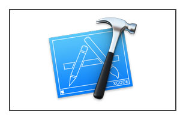
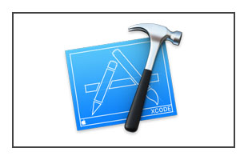

Be Aware of our products
The term "mobile" generally refers to anything that is capable of moving or being moved easily. In various contexts, it can have specific meanings:
Mobile Technology: This refers to portable devices such as smartphones, tablets, and laptops that allow users to access information, communicate, and perform tasks on the go. Mobile technology also encompasses mobile networks and services that enable wireless communication.
Mobile Computing: This involves the use of portable computing devices and wireless networks to perform computing tasks while on the move. It includes applications that are designed to work on mobile devices, such as mobile apps.
Mobile Marketing: This refers to marketing strategies that target users on their mobile devices, utilizing SMS, apps, and mobile-optimized websites to reach consumers effectively.
Mobile Games: Video games designed specifically for mobile devices, offering interactive entertainment that can be played anywhere.
Mobile Homes: Pre-manufactured homes that are designed to be transported to different locations.


 
